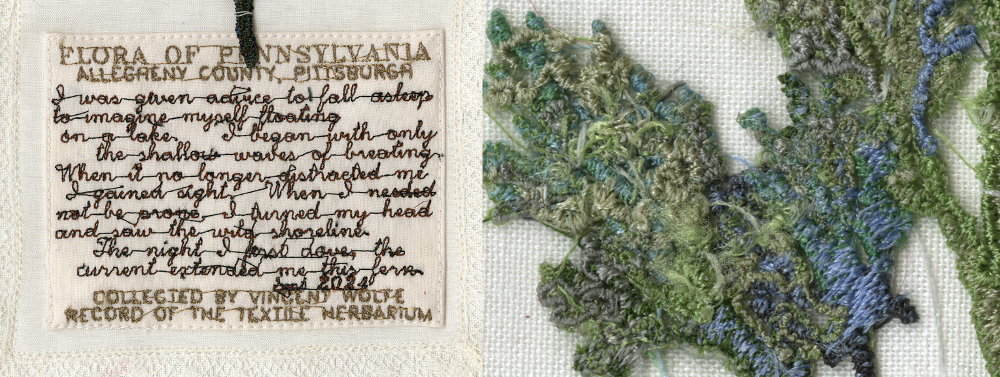

I use Processing to generate the plant forms as L-Systems (a system to create 3D fractals from a ruleset and a string) with paramaters found in an Algorithmic Botany paper. I use the PEmbroider library to make a stitch plan for my digital embroidey machine, then embroider the plant onto a dissolvable stabalizer which will leave the thread as a free standing structure. Layering and improperly tensioning the thread allows me to create mossy textures.
These are not yet modeled after specific genuses, but as I was looking for reference images the sometimes loving descriptions that botanists wrote about real plants inspired me to begin writing poems in the labels. The embroidered cursive text borders on illegibility, so I provide transcribed labels which you can see by clicking on any image in the grid below.
These are occasionally for sale, and only on pause while I look for a next step to develop the project.